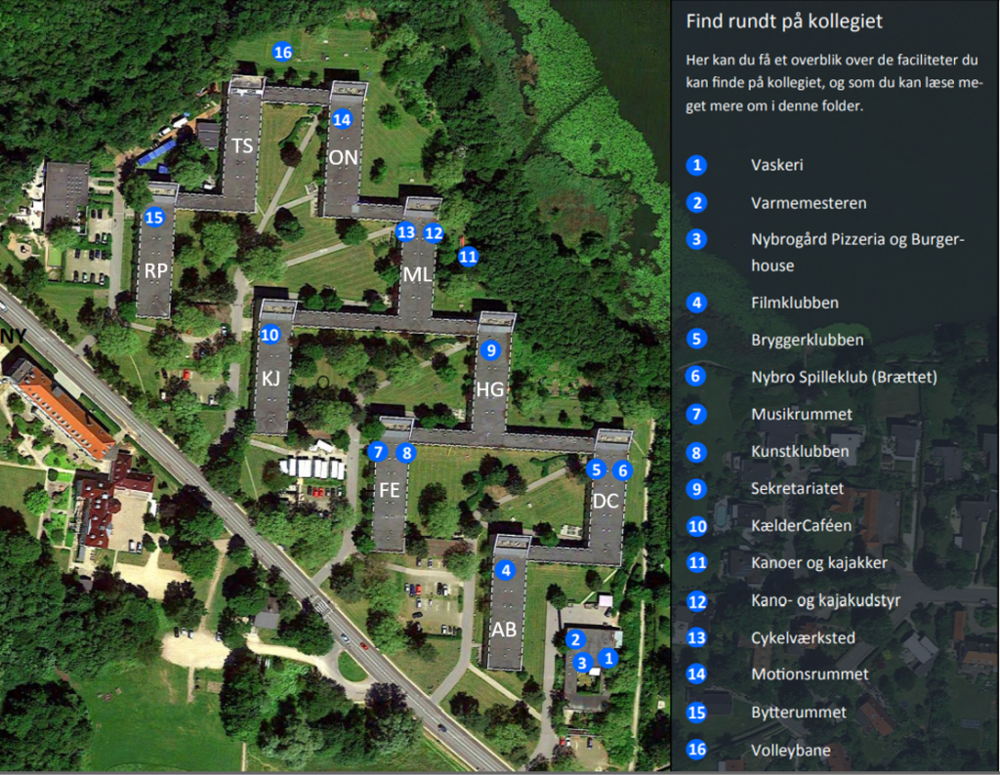

Socialt, når du vil
Vælg selv tempoet. Du kan være meget aktiv, lidt nysgerrig eller bare kigge forbi, når du har energi.
På Nybrogård kan fællesskab starte med en fredagsbar, en kanotur, et brætspil, et fælleskøkken eller bare én person, der siger: “Hey, vil du med?”
Vælg selv tempoet. Du kan være meget aktiv, lidt nysgerrig eller bare kigge forbi, når du har energi.
Brug klubmenuen til at hoppe direkte til det, du leder efter, uden at skulle scrolle langt.
Mange klubber bruger Facebook til beskeder, events og spontane opslag, så nye beboere lettere kan komme med.
Denne side samler klubber, sociale muligheder, fællesområder og Facebook-grupper ét sted. Målet er, at både nye og nuværende beboere hurtigt kan finde ud af, hvor de kan møde andre, deltage i aktiviteter eller bare se, hvad der sker.
Filtrér efter det, du har lyst til: socialt, aktivt, kreativt, praktisk eller natur.
Kollegiets sociale samlingspunkt med fredagsbar, billige drinks, nabohygge og månedlige temafester.
Gratis motionsrum for beboere, åbent hele døgnet i kælderen under opgang O.
Lån kanoer og kajakker, kom ud på Lyngby Sø, Bagsværd Sø og Mølleåen — efter intro og medlemsregistrering.
Nybros brætspilsklub i CD-kælderen med ugentlige spilaftener, lånespil og plads til nørdet konkurrence.
Kollegiets cykelværksted ved blok M med værktøj til de fleste reparationer og hjælp via fællesskabet.
En hjemmebiograf i B-kælderen med surroundsound, sofarækker, stort lærred og booking for registrerede medlemmer.
Et hyggeligt atelier i F-kælderen med mere plads til kreative projekter, kunst, te og rodet skaberenergi.
Øvelokale under EF-køkkenerne med trommesæt, klaver og PA-anlæg for beboere, der vil spille og øve.
Et lille bryggerum i D-kælderen med udstyr til øl, cider og vin i portioner på cirka 20 liter.
Gruppen arbejder for et grønnere kollegie gennem kampagner, byttemarkeder, affaldssortering og fælles oprydning.
Få adgang til kollegiets haver, fælles bærbuske og frugttræer — og dyrk dine egne grønne eksperimenter.
Brug kortet til hurtigt at finde klubrum, fællesområder og de vigtigste steder på kollegiet.

Klik på billedet for at åbne det i et større format.
Mange starter bare med at dukke op én gang, spørge i en gruppe eller tage en ven/nabo med. Fællesskab behøver ikke være stort fra dag ét — det må godt starte stille.